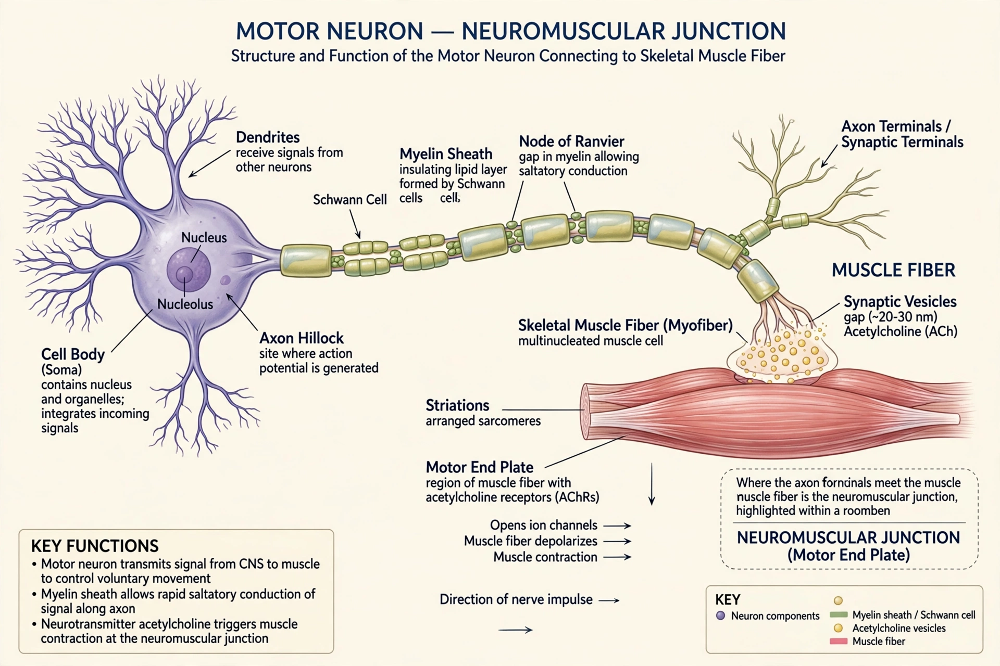

A motor neuron (or motoneuron) is a neuron whose cell body is located in the motor cortex, brainstem or spinal cord, and whose axon projects outside the central nervous system to directly or indirectly control effector organs, mainly muscles and glands. Motor neurons are efferent neurons that convey impulses from the CNS to effectors.

| Motor neuron | |
|---|---|
| Location | Motor cortex, brainstem, ventral horn of spinal cord |
| Function | Muscle contraction, gland secretion |
| Neurotransmitter | Acetylcholine (at neuromuscular junction) |
Upper motor neurons originate in the motor cortex and descend to the brainstem and spinal cord; lower motor neurons run from there to muscles. Lower motor neurons include alpha motor neurons innervating extrafusal muscle fibers, gamma motor neurons innervating muscle spindles, and beta motor neurons. A motor unit consists of one motor neuron and all the muscle fibers it innervates.
At the neuromuscular junction, motor neurons release acetylcholine, triggering muscle contraction. Motor neuron diseases include amyotrophic lateral sclerosis (ALS), spinal muscular atrophy, polio, and progressive muscular atrophy.